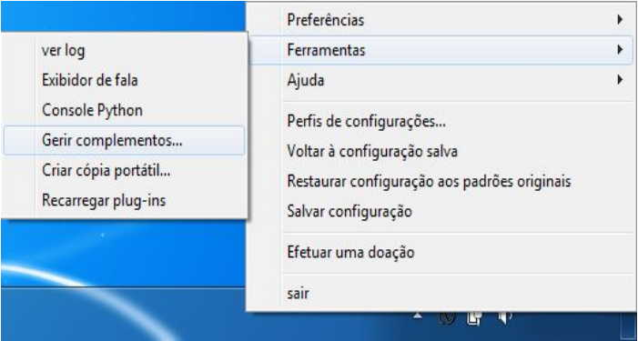
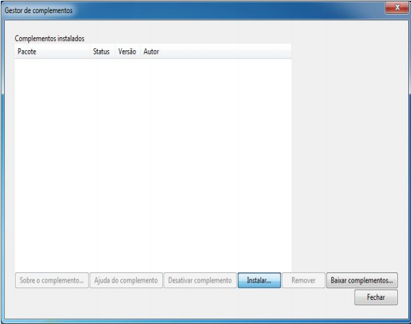
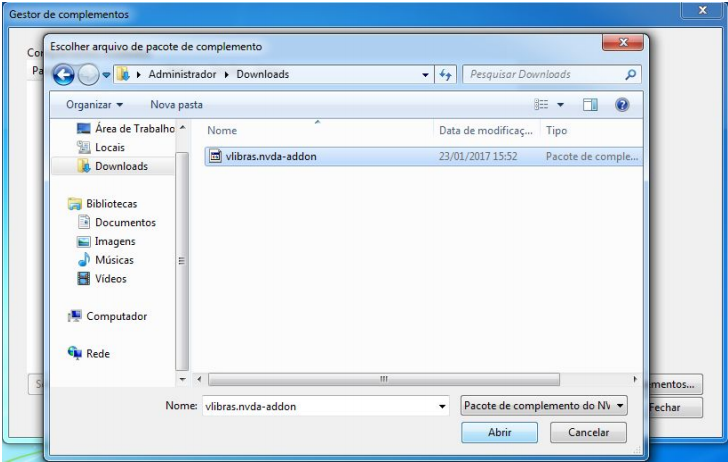
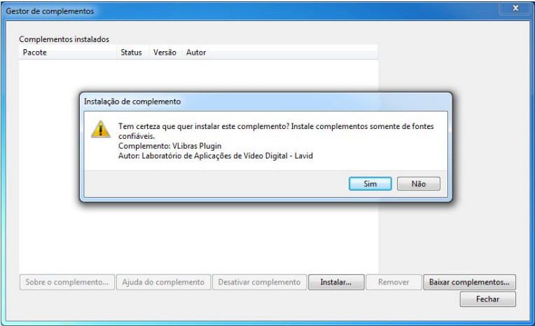
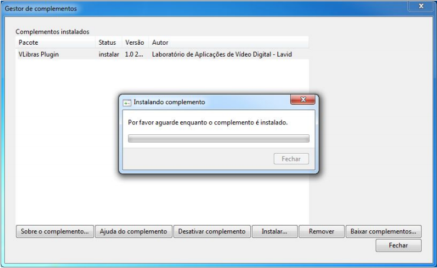
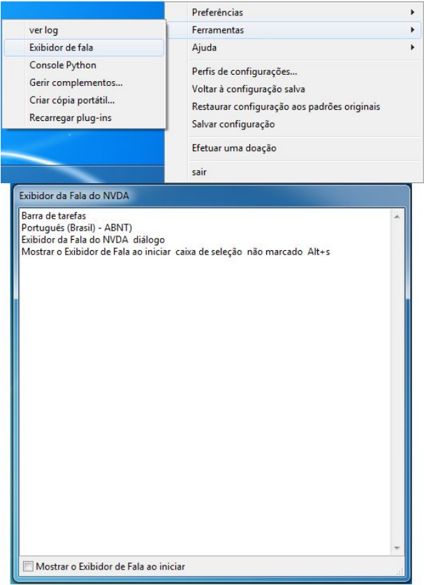
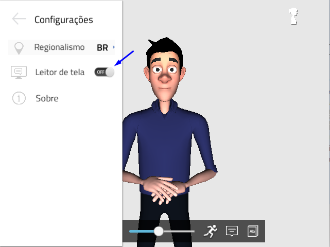
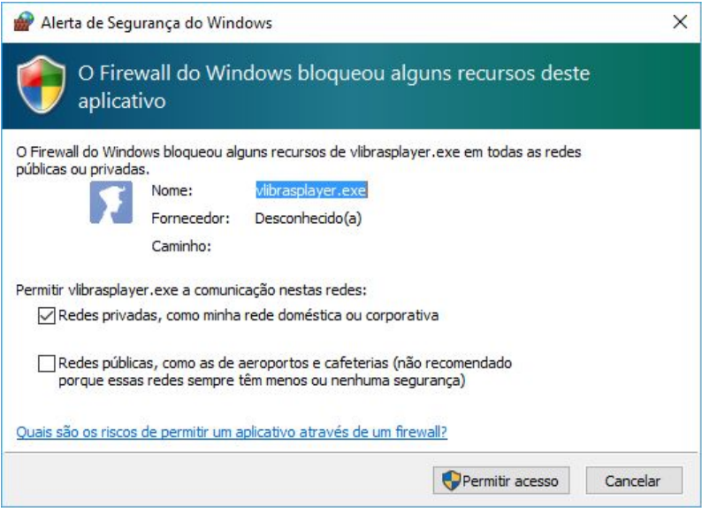

Leitor de Tela¶
A funcionalidade Leitor de Tela, a qual habilita o software NVDA (NonVisual Desktop Access), que é um software que executa a leitura da página que está em foco do computador do usuário, sintetiza em áudio o que está sendo lido e envia para o VLibras essa informação, facilitando a leitura da tela em LIBRAS. Desse modo, o usuário habilita a opção de Leitor de Tela no menu lateral do VLibras, e o software NVDA será executado. Para haver comunicação entre ele e o VLibras, é preciso realizar o download do plugin NVDA. Inicialmente, o usuário deve realizar o download do plugin no site do VLibras, no link http://vlibras.gov.br/files/vlibras-1.0.0-170220.1540.nvda-addon; Em seguida, é preciso adicionar o plugin no NVDA. Para isso, é necessário abrir o NVDA, clicar com o botão direito e escolher a opção Ferramentas->Gerir Complementos
O próximo passo consiste em instalar o novo plugin no NVDA. Deve-se clicar no botão Instalar e escolher o plugin disponibilizado no site do VLibras, cujo download foi realizado pelo usuário anteriormente. Esse passos são ilustrados nas próximas quatro imagens.


É necessário primeiramente clicar no botão INSTALAR e selecionar no plugin VLibras, cujo nome é vlibras.nvda-addon. Após a instalação, as informações do plugin serão exibidas na tela do Gestor de complementos, conforme a Figura 23. Após esse processo, é necessário reiniciar o software NVDA para que as alterações realizadas sejam carregadas.
Após a configuração do NVDA e habilitação da opção Leitor de Tela no VLibras, a comunicação entre o que está sendo processado do NVDA durante a leitura da tela do usuário e o VLibras foi estabelecida. O NVDA denomina uma tecla que é chamada “NVDA”, que por padrão é a tecla “INSERT”. O Plugin VLibras possui um atalho associado à ferramenta NVDA, que serve para silenciar a sintetização de voz. Para habilitar ou desabilitar esta opção, pressione NVDA+Shift+V. Enquanto o plugin Vlibras estiver ativado, o Exibidor de Fala do NVDA não estará acessível. Para restaurar essa funcionalidade do NVDA, basta desativar ou remover o plugin do VLibras. A opção do NVDA que ativa o Exibidor de Fala é ilustrada na imagem abaixo.

Também será perguntado ao usuário pelo firewall do sistema operacional Windows se ele deseja permitir o acesso de alguns recursos pelo VLibras. O alerta de segurança é ilustrado abaixo.
O usuário deve desabilitar a opção Leitor de Tela localizado no Side Menu do VLibras para desabilitar o NVDA. Caso isso não seja feito e o VLibras for finalizado, o NVDA continuará aberto, sendo necessário abrir o Gerenciador de Tarefas e finalizá-lo ou reiniciar o computador.